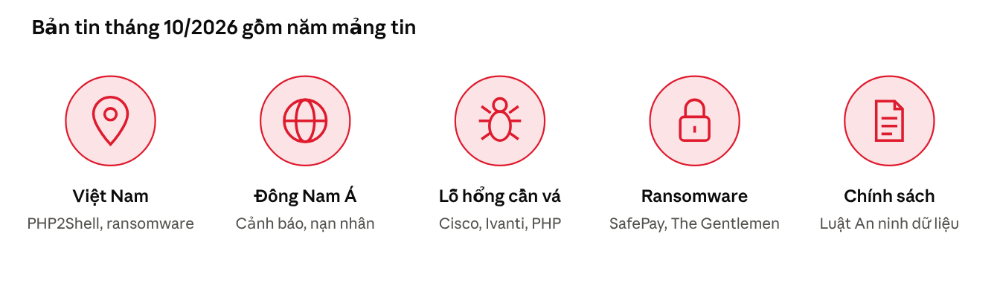
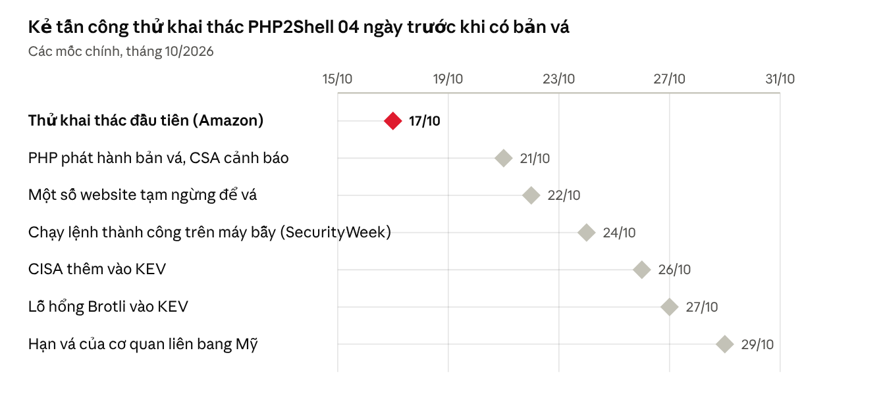
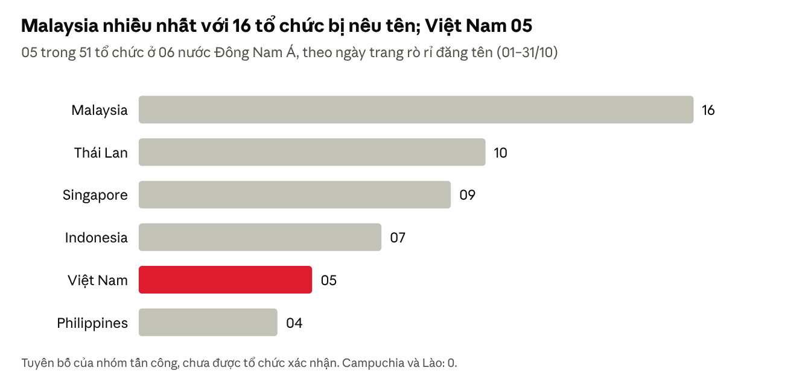
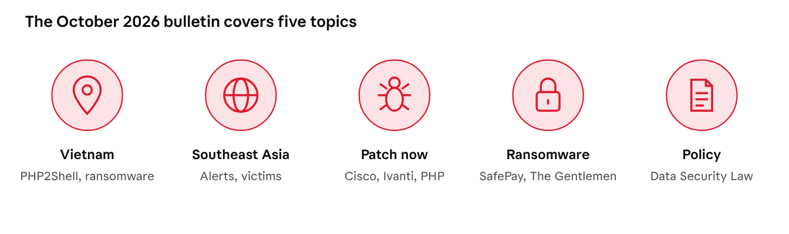
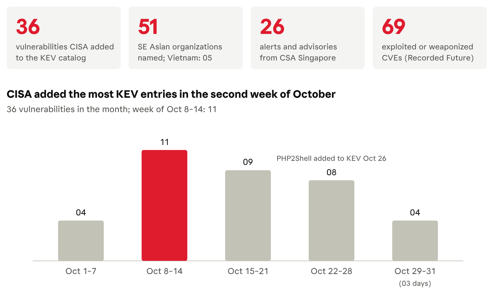
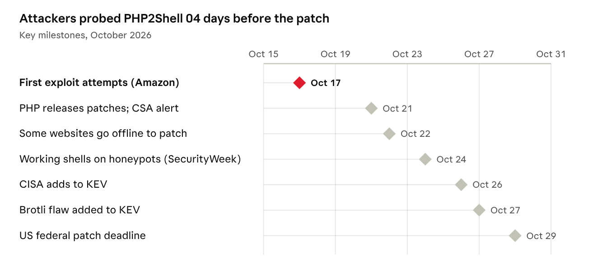
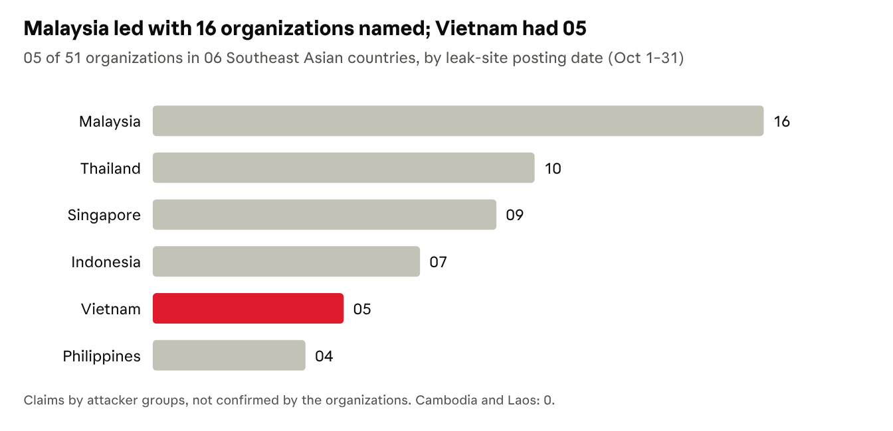

PHP2Shell (CVE-2026-109618, CVE-2026-109619): thử khai thác ghi nhận từ 17/10, PHP phát hành bản vá ngày 21/10, máy bẫy ghi nhận chạy mã thành công ngày 24/10, CISA đưa vào KEV ngày 26/10. CISA thêm 36 lỗ hổng vào danh mục KEV trong tháng, 15 lỗ hổng nằm ở sản phẩm phổ biến tại Việt Nam. ransomware.live ghi 05 tổ chức Việt Nam và 51 tổ chức Đông Nam Á bị nhóm ransomware nêu tên.
Theo ngành
Vận tải và logistics chiếm 13 trong 45 tin đăng có dữ liệu ngành ở Đông Nam Á. Giáo dục có tin rao bán dữ liệu học viên Ocean Edu. 03 tổ chức tài chính trong khu vực bị nêu tên; trong dữ liệu này chưa có ngân hàng Việt Nam.
Việc cần làm ngay
Cập nhật PHP và rà nhật ký máy chủ từ 17/10; đối chiếu thiết bị biên (Cisco, Ivanti, Palo Alto, Fortinet, Citrix) với danh sách KEV tháng 10; bật xác thực đa yếu tố cho VPN và truy cập từ xa.
Mức độ tin cậy
Cao với số liệu KEV và cảnh báo của CSA Singapore (dữ liệu gốc, kiểm 09/11/2026). Trung bình với tin PHP2Shell tại Việt Nam (nguồn thứ cấp). Thấp với danh sách nạn nhân ransomware: đây là tuyên bố của nhóm tấn công, chưa có xác nhận của tổ chức bị nêu tên.
Miễn trừ trách nhiệm: Bản tin này được biên soạn cho mục đích cá nhân, không nhằm mục đích thương mại. Nội dung tổng hợp từ nguồn công khai và chỉ để tham khảo.

Hình 1. Năm mảng tin của bản tin
Số liệu tháng 10
CISA thêm 36 lỗ hổng đang bị khai thác vào danh mục KEV trong tháng 10, trong đó 11 lỗ hổng vào tuần 08–14/10.
Hình 2. Số liệu tháng 10 và số lỗ hổng vào KEV theo tuần. Nguồn: CISA KEV (tệp JSON bản 2026.11.06), ransomware.live, CSA Singapore, Recorded Future; kiểm 09/11/2026
KEV (Known Exploited Vulnerabilities) là danh mục lỗ hổng CISA đã có bằng chứng bị khai thác thật. Không lỗ hổng nào trong 36 lỗ hổng tháng 10 được CISA ghi là đã dùng trong chiến dịch ransomware tính đến 09/11/2026 [11].
Việt Nam
Trong tháng 10, tổ chức Việt Nam có máy chủ PHP chưa vá chịu rủi ro trực tiếp từ PHP2Shell. Cùng tháng, 05 tổ chức Việt Nam bị nhóm ransomware nêu tên trên trang rò rỉ, và ngày 29/10 có tin rao bán dữ liệu học viên của một hệ thống trung tâm tiếng Anh.
PHP2Shell và website tại Việt Nam
Theo VnReview, dữ liệu BuiltWith nhận diện hơn 143.000 website tại Việt Nam dùng PHP [1]. Đây là số website dùng PHP, không phải số website có lỗ hổng. Amazon Threat Intelligence ghi nhận thử khai thác từ 17/10, 04 ngày trước khi bản vá ra [2].
Một số website tạm ngừng hoạt động ngày 22/10 để vá [3]. Với website dùng WordPress, cập nhật WordPress hay plugin không cập nhật PHP; việc này do quản trị máy chủ hoặc nhà cung cấp hosting làm.

Hình 3. PHP2Shell, 07 mốc từ 17/10 đến 29/10/2026. Nguồn: Amazon, PHP, CSA Singapore, VnReview, SecurityWeek, The Hacker News, CISA KEV
Ngày 24/10, máy bẫy (honeypot) chạy PHP 8.4.26 của nhà nghiên cứu Adel Karimi (Perplexity) ghi 35 lần chạy lệnh thành công từ 02 địa chỉ IP [4]. Từ lần thử khai thác đầu tiên đến khi CISA xác nhận bị khai thác là 09 ngày; máy chủ PHP mở ra Internet chưa vá trong khoảng này cần được kiểm tra dấu vết xâm nhập.
Tổ chức Việt Nam bị nhóm ransomware nêu tên
Bảng 1. Tổ chức Việt Nam bị nhóm ransomware nêu tên, tháng 10/2026
Ngày phát hiện
Tổ chức (theo nhóm tấn công)
Nhóm
Ghi chú
31/10/2026
FPT Software
The Gentlemen
ransomware.live ước ngày tấn công 27/10; SOCRadar ghi trạng thái "Claimed"
21/10/2026
dangvuongcac (tên theo trang rò rỉ, loại hình chưa xác minh)
Hyflock
Nhóm nêu dữ liệu phòng khách sạn và tin nhắn
12/10/2026
Cảng Nam Đình Vũ (khai thác container)
N0n
Nhóm nêu kho tin nhắn EDI của cảng
09/10/2026
Vietnam SuperPort
Nightspire
ransomware.live ước ngày tấn công 20/07/2026
02/10/2026
Mắt Bão
Rhysida
Nhà cung cấp tên miền và hosting
Nguồn: ransomware.live, trang Việt Nam, kiểm 09/11/2026 [5]; SOCRadar [6]. Đây là tuyên bố của nhóm tấn công. Đến 09/11/2026 chưa tìm thấy xác nhận công khai của các tổ chức này hay của cơ quan chức năng.
Tin rao bán dữ liệu ngành giáo dục
Ngày 29/10, VnReview đưa tin một đối tượng trên diễn đàn tin tặc tuyên bố có hơn 02 triệu bản ghi học viên của Hệ thống Anh ngữ Quốc tế Ocean Edu, dung lượng trên 4 GB [32]. Theo tuyên bố, dữ liệu gồm họ tên, email, số điện thoại, địa chỉ, ngày sinh, số định danh cá nhân, hồ sơ học tập, mật khẩu dạng hàm băm và hơn 80.000 ảnh học viên. Tin xuất phát từ tài khoản @DailyDarkWeb trên X.com. Đến 09/11/2026 chưa có xác nhận của Ocean Edu, và tính xác thực của dữ liệu chưa được kiểm chứng độc lập. Dữ liệu học viên có thể gồm thông tin của người chưa thành niên.
Cơ quan nhà nước
Trang VNCERT không đăng cảnh báo hay tin mới trong tháng 10; bài gần nhất ngày 17/06/2026 [7]. Trong các nguồn đã rà, chưa thấy cảnh báo công khai riêng về PHP2Shell của cơ quan Việt Nam.
Đông Nam Á
51 tổ chức ở 06 nước Đông Nam Á bị nhóm ransomware nêu tên trong tháng 10; Malaysia nhiều nhất với 16. Singapore phát 26 cảnh báo an ninh mạng trong tháng.

Hình 4. Tổ chức Đông Nam Á bị nhóm ransomware nêu tên theo nước. Nguồn: ransomware.live, trang theo quốc gia, lọc ngày phát hiện 01–31/10/2026, kiểm 09/11/2026
The Gentlemen chiếm 04 trong 10 nạn nhân được công bố tại Thái Lan. Ngày 12/10, nhóm N0n đăng cùng lúc tên 07 tổ chức ở Việt Nam, Singapore và Indonesia [8].
CSA Singapore phát 25 cảnh báo (AL-2026-131 đến AL-2026-155) và 01 khuyến cáo trong tháng 10 [9]. Các cảnh báo gồm PHP2Shell (21/10), F5 NGINX (21/10), Ivanti Connect Secure (20/10), Palo Alto Networks (16/10) và Brotli (30/10). Khuyến cáo AD-2026-013 ngày 28/10 nói về mã độc phát tán qua WhatsApp [10].
Tại Malaysia, NC4 phát 08 cảnh báo và khuyến cáo trong tháng 10 về lỗ hổng ảnh hưởng đơn vị vận hành hạ tầng trọng yếu và cơ quan nhà nước. Từ 04/11, NACSA nâng mức đe dọa an ninh mạng quốc gia từ Thấp lên Trung bình; Hội đồng An ninh Quốc gia (MKN) gọi đây là biện pháp phòng ngừa [33]. Ngày 28/10, Bernama dẫn lời ông Fong Choong Fook, giám đốc điều hành LGMS: tấn công dùng AI, kể cả do tác tử AI thực hiện, đã xuất hiện tại Malaysia từ tháng 07 và dự kiến tăng mạnh từ năm 2027 [34]. Đây là nhận định của một công ty an ninh mạng, không phải báo cáo về một vụ tấn công cụ thể trong tháng 10.
Trong các nguồn đã rà, chưa thấy báo cáo APT mới công bố trong tháng 10 nhắm riêng Việt Nam.
Tác động theo ngành
Theo trường ngành của ransomware.live, vận tải và logistics có nhiều tin đăng nhất ở Đông Nam Á trong tháng 10, với 13 trong 45 tin đăng có dữ liệu ngành [35]. Bảng dưới gom các sự kiện tháng 10 theo 07 ngành; ngành không có sự kiện trong nguồn đã rà được ghi rõ.
Bảng 2. Tác động theo ngành, tháng 10/2026
Ngành
Sự kiện tháng 10 có nguồn
Việc nên làm
Ngân hàng, tài chính, bảo hiểm (BFSI)
Trong dữ liệu ransomware.live, 03 tổ chức tài chính bị nêu tên: XSpring Capital (Thái Lan, LockBit5, 29/10), YYC Advisors (Malaysia, Hyflock, 13/10) và sàn tiền mã hóa Gate (Singapore, BYOD, 07/10) [35]. Tại Việt Nam, Báo Thanh tra ngày 07/10 đưa tin từ họp báo của Ngân hàng Nhà nước: đến nay hệ thống SIMO đã cảnh báo hơn 5,6 triệu lượt khách hàng; hơn 1,9 triệu lượt tạm dừng hoặc hủy giao dịch, tổng giá trị hơn 6.300 tỷ đồng [36]. Trong dữ liệu ransomware.live, chưa có ngân hàng Việt Nam bị nêu tên trong tháng.
Vá thiết bị biên và VPN theo Bảng 3; bật xác thực đa yếu tố; rà quyền truy cập của bên cung cấp dịch vụ.
Giáo dục
Tin rao bán hơn 02 triệu bản ghi học viên Ocean Edu (29/10) [32]. INTI International University & Colleges (Malaysia, Rhysida, 30/10) và Wellington College International School Bangkok (Thái Lan, The Gentlemen, 17/10) bị nêu tên [35]. Trên toàn cầu, Comparitech ghi 47 vụ ransomware nhắm vào giáo dục trong tháng 10, trong đó 14 vụ đã được xác nhận, so với 29 vụ trong tháng 09 [37].
Rà hệ thống quản lý học viên và website dùng PHP; giảm dữ liệu định danh và ảnh học viên được lưu; chuẩn bị quy trình xử lý sự cố lộ dữ liệu cá nhân.
Cảng và logistics
13 trong 45 tin đăng có dữ liệu ngành ở Đông Nam Á thuộc vận tải [35]. Ngày 12/10, nhóm N0n nêu tên 07 tổ chức cảng, vận tải biển và logistics, gồm Cảng Nam Đình Vũ, Ocean Network Express và ILCS Pelindo. Vietnam SuperPort (tin đăng 20/07, phát hiện 09/10), Thai Lion Air (02/10) và Light Rail Manila (30/10) cũng bị nêu tên [35].
Tách mạng hệ thống EDI và điều hành cảng khỏi mạng văn phòng; kiểm tra tài khoản đối tác truy cập từ xa.
Dịch vụ CNTT và hosting
FPT Software và Mắt Bão bị nêu tên tại Việt Nam; Digital Triumph, GSE-M Technology (Malaysia), Codar (Singapore) và DATEM (Philippines) cũng bị nêu tên [35]. PHP2Shell ảnh hưởng trực tiếp máy chủ hosting dùng PHP [1], [4].
Khách hàng của nhà cung cấp bị nêu tên nên hỏi nhà cung cấp về phạm vi ảnh hưởng và đổi khóa, mật khẩu dùng chung; nhà cung cấp hosting vá PHP trên toàn bộ máy chủ.
Y tế
Antah HealthCare Group (Malaysia, Crypto24, 27/10) bị nêu tên [35]. Không ghi nhận tổ chức y tế Việt Nam bị nêu tên trong nguồn đã rà.
Vá thiết bị biên; sao lưu ngoại tuyến hệ thống bệnh án; kiểm tra truy cập từ xa của nhà cung cấp thiết bị.
Sản xuất
Royal Selangor (Malaysia, BYOD, 05/10), Disk Precision Group (Singapore, Krybit, 01/10) và WIKA Beton (Indonesia, The Gentlemen, 31/10) bị nêu tên [35]. Không ghi nhận doanh nghiệp sản xuất Việt Nam bị nêu tên trong nguồn đã rà.
Tách mạng sản xuất (OT) khỏi mạng văn phòng; vá Fortinet, Palo Alto và Cisco theo Bảng 3.
Cơ quan nhà nước
Royal Thai Air Force (Thái Lan, The Gentlemen, 10/10) bị nêu tên [35]. NC4 Malaysia phát 08 cảnh báo cho đơn vị vận hành hạ tầng trọng yếu và cơ quan nhà nước trong tháng 10 [33]. VNCERT không đăng cảnh báo trong tháng [7].
Theo dõi cảnh báo của cơ quan chuyên trách; vá lỗ hổng KEV, lấy hạn của CISA làm mốc tham chiếu.
Ngoài 07 ngành trên, năng lượng và tiện ích có 05 tổ chức bị nêu tên: MISC Group, Pengurusan Aset Air Berhad (Malaysia), một kho lưu trữ năng lượng tại Singapore, Supreme Energy và PT Indo Tambangraya Megah (Indonesia) [35]. Thống kê dựa trên 50 tin đăng trong dữ liệu ransomware.live truy xuất ngày 19/11/2026, ít hơn 01 so với con số 51 ở mục Đông Nam Á vì dữ liệu Malaysia trả về thiếu 01 tin; 05 tin không có dữ liệu ngành. Đây là tuyên bố của nhóm tấn công, chưa được xác nhận.
Lỗ hổng cần vá ngay
15 trong 36 lỗ hổng CISA thêm vào danh mục KEV tháng 10 nằm ở sản phẩm doanh nghiệp Việt Nam thường dùng: thiết bị biên, cổng VPN, hạ tầng ảo hóa và PHP. Danh sách 15 lỗ hổng này được chọn theo mức phổ biến của sản phẩm; chưa có số liệu triển khai tại Việt Nam.
Bảng 3. Lỗ hổng trong danh mục KEV tháng 10 ở sản phẩm phổ biến tại Việt Nam
Ngày vào KEV
CVE
Sản phẩm
Ghi chú
30/10/2026
CVE-2026-111357, CVE-2026-118527
Ivanti Connect Secure
Lần thứ hai trong tháng với cùng sản phẩm
29/10/2026
CVE-2026-76418
Cisco Secure Firewall ASA và FTD
CSA Singapore cảnh báo khai thác ngày 04/11
29/10/2026
CVE-2026-97229
GitLab CE/EE
Bản tự quản trị cần nâng cấp
28/10/2026
CVE-2026-41709
Broadcom VMware ESX
27/10/2026
CVE-2026-111497
Thư viện nén Google Brotli
Có trong .NET, bản PHP cho Windows và PAN-OS; Microsoft phát hành bản vá khẩn .NET ngày 26/10
26/10/2026
CVE-2026-109618, CVE-2026-109619
PHP (PHP2Shell)
Bản đã vá: 8.5.12, 8.4.27, 8.3.36, 8.2.35
16/10/2026
CVE-2026-102764
BeyondTrust Remote Support
16/10/2026
CVE-2025-61624
Nhiều sản phẩm Fortinet
14/10/2026
CVE-2026-76519
Cisco Secure Email Gateway
Zero-day, chạy lệnh quyền root qua tệp đính kèm email
14/10/2026
CVE-2026-0322
Palo Alto Networks PAN-OS
13/10/2026
CVE-2026-104935
Ivanti Connect Secure
04/10/2026
CVE-2026-88779
Citrix NetScaler
01/10/2026
CVE-2026-104286
Fortinet FortiMail
Nguồn: CISA KEV, tệp JSON bản 2026.11.06, tải ngày 09/11/2026 [11]; phiên bản PHP đã vá [12]; bản vá .NET [13]; Cisco Secure Email Gateway ngày 14/10 [14], tín hiệu ban đầu từ X.com [15]. Ngoài KEV, Recorded Future ghi 69 lỗ hổng bị khai thác hoặc đã được vũ khí hóa trong tháng 10 [16].
Ransomware và kỹ thuật tấn công
Ngày 20/10, CISA, FBI, Sở Mật vụ Mỹ (USSS), Cảnh sát hình sự bang Rheinland-Pfalz (Đức), Cơ quan Tội phạm quốc gia Anh (NCA) và đơn vị NWROCU của Anh phát khuyến cáo chung AA26-293A về SafePay: nhóm này đã xâm nhập ít nhất 600 tổ chức từ tháng 08/2024 [17].
SafePay vào mạng bằng thông tin đăng nhập bị lộ, dò mật khẩu, truy cập VPN, khai thác lỗ hổng thiết bị biên và phần mềm sao lưu (Cisco VPN, Veeam Backup & Replication, SonicWall SonicOS) và phishing, rồi vừa mã hóa vừa đe dọa công bố dữ liệu [18], [19], [20]. ransomware.live ghi 01 nạn nhân SafePay tại Malaysia trong tháng 10 [8].
The Gentlemen có 1.082 nạn nhân trên trang theo dõi của ransomware.live (kiểm 09/11/2026), trong đó Thái Lan có 44. Trang ghi nhóm này nhắm Windows, Linux, NAS và BSD [21].
Kẻ tấn công nối PHP2Shell với lỗ hổng nhân Linux CVE-2026-46300 để leo thang quyền [16].
Một máy quét giả danh khoảng 32 bot AI (OpenAI, Anthropic, Perplexity, Meta) để tìm tệp .env, khóa SSH và khóa đám mây, từ cuối tháng 9 đến cuối tháng 10. Cequence không ghi nhận vụ xâm nhập nào [22].
Socket phát hiện 319 tiện ích Chrome với 13,4 triệu lượt cài đặt chuyển hướng tìm kiếm qua máy chủ của bên vận hành. Phần lớn ẩn khỏi kết quả tìm kiếm trên Chrome Web Store và được quảng cáo thành công cụ PDF hoặc bảo mật [23].
Hai tin cuối có tín hiệu ban đầu từ X.com (@DarkReading, @BleepinComputer) [15] và đã đối chiếu với bài gốc.
Chính sách và quy định
Ngày 26/10, Quốc hội thảo luận tại tổ dự án Luật An ninh dữ liệu. Dự thảo phân cấp dữ liệu theo rủi ro; các cấp độ có thể thay đổi trước khi luật được thông qua.
Ngày 26/10, tại kỳ họp thứ hai, Quốc hội khóa XVI thảo luận tại tổ 05 dự án luật do Bộ Công an chủ trì soạn thảo, gồm Luật An ninh dữ liệu và Luật Định danh và xác thực điện tử [24]. Hai dự án này được thảo luận tại hội trường ngày 04/11 [25].
Dự thảo Luật An ninh dữ liệu chia 05 cấp độ rủi ro. Chủ quản dữ liệu tự xác định cấp độ; từ cấp 3 phải đánh giá tác động và kiểm toán định kỳ; hệ thống cấp 4 và 5 phải được thẩm định [25]. Theo tờ trình, luật dự kiến có hiệu lực từ 01/07/2027 [26]; luật chưa được thông qua.
Luật An ninh mạng số 116/2025/QH15 được Quốc hội thông qua ngày 10/12/2025, có hiệu lực từ 01/07/2026; Điều 44 ghi Luật An ninh mạng 24/2018/QH14 hết hiệu lực [27]. Ngày 19/08/2026, Chính phủ ban hành Nghị định 333/2026/NĐ-CP hướng dẫn luật này và Nghị định 330/2026/NĐ-CP về xử phạt vi phạm hành chính trong an ninh mạng và bảo vệ dữ liệu cá nhân [28]. Cả hai nghị định có hiệu lực từ ngày ký [29]; chưa đối chiếu Công báo.
Tại Mỹ, cơ quan dân sự liên bang phải vá PHP2Shell trước 29/10, 03 ngày sau khi lỗ hổng vào KEV [30], [31].
Khuyến nghị cho doanh nghiệp
06 việc dưới đây gắn với các phát hiện ở trên, xếp theo thứ tự nên làm trước.
Kiểm kê mọi máy chủ và sản phẩm chạy PHP, kể cả thiết bị và phần mềm bên thứ ba nhúng PHP. Nâng lên 8.5.12, 8.4.27, 8.3.36 hoặc 8.2.35; rà nhật ký truy cập từ 17/10.
Đối chiếu thiết bị biên với bảng lỗ hổng ở trên: Ivanti Connect Secure, Cisco ASA, FTD và Secure Email Gateway, Palo Alto PAN-OS, Fortinet, Citrix NetScaler. Với thiết bị chưa vá trong tháng 10, nên kiểm tra dấu vết xâm nhập.
Cập nhật sản phẩm dùng thư viện Brotli, gồm .NET và PHP bản Windows.
Bật xác thực đa yếu tố cho VPN, truy cập từ xa và tài khoản quản trị; chặn dò mật khẩu. Đây là các đường vào SafePay đã dùng theo khuyến cáo AA26-293A.
Gỡ tệp .env, khóa SSH và tệp chứa khóa đám mây khỏi thư mục web; không cho phép truy cập chỉ vì tên bot AI trong User-Agent.
Theo dõi bản Luật An ninh dữ liệu được thông qua; các cấp độ trong dự thảo có thể thay đổi.
Nguồn và phương pháp
Kỳ dữ liệu 01/10 đến 31/10/2026, thu thập và kiểm ngày 09/11/2026. Tin được chọn khi liên quan Việt Nam hoặc Đông Nam Á, có bằng chứng khai thác thật, nằm ở sản phẩm phổ biến tại Việt Nam, hoặc là văn bản pháp luật mới. Tin từ X.com chỉ dùng làm tín hiệu và đã đối chiếu với nguồn gốc ngoài X.com. Số trong ngoặc vuông trỏ tới danh mục ở Phụ lục.
Trang theo quốc gia, lọc ngày phát hiện; ghi "Source: Ransomware.live" kèm liên kết. Dùng cho ấn phẩm thương mại cần chấp thuận bằng văn bản của trang (chưa có)
Đọc ngày 09/11/2026; 05 bài được dùng sau khi đối chiếu
Giới hạn: số nạn nhân ransomware là tuyên bố của nhóm tấn công, chưa được tổ chức xác nhận. Chưa có số liệu chính thức về số sự cố tại Việt Nam trong tháng 10.
Bản tin tổng hợp từ nguồn công khai, chỉ để tham khảo, không phải tư vấn pháp lý hay kỹ thuật cho từng tổ chức. Danh sách nạn nhân là tuyên bố của nhóm tấn công, chưa được xác nhận. Bản tin không bảo đảm tính đầy đủ của dữ liệu bên thứ ba.
Phụ lục: Nguồn tham khảo
Truy cập và kiểm ngày 09/11/2026, trừ khi ghi khác.
PHP2Shell (CVE-2026-109618, CVE-2026-109619): exploit attempts were first seen on Oct 17, PHP released patches on Oct 21, honeypots recorded successful code execution on Oct 24, and CISA added the flaws to KEV on Oct 26. CISA added 36 vulnerabilities to the KEV catalog during the month; 15 of them affect products widely used in Vietnam. ransomware.live lists 05 Vietnamese organizations and 51 Southeast Asian organizations named by ransomware groups.
By sector
Transportation and logistics accounted for 13 of the 45 Southeast Asian listings with sector data. In education, Ocean Edu student data was reported as offered for sale. 03 financial organizations in the region were named; no Vietnamese bank appears in this data.
Act now
Update PHP and review server logs from Oct 17; check edge devices (Cisco, Ivanti, Palo Alto, Fortinet, Citrix) against the October KEV list; enable multi-factor authentication for VPN and remote access.
Confidence
High for KEV data and CSA Singapore alerts (primary data, checked Nov 9, 2026). Medium for PHP2Shell news in Vietnam (secondary sources). Low for the ransomware victim list: these are claims by attacker groups, not confirmed by the organizations named.
Disclaimer: This bulletin is prepared for personal use and is not intended for commercial purposes. It is compiled from public sources and is for reference only.

Figure 1. The five topics of the bulletin
October in Numbers
CISA added 36 actively exploited vulnerabilities to the KEV catalog in October, 11 of them in the week of Oct 8–14.

Figure 2. October figures and KEV additions by week. Sources: CISA KEV (JSON file, version 2026.11.06), ransomware.live, CSA Singapore, Recorded Future; checked Nov 9, 2026
KEV (Known Exploited Vulnerabilities) is CISA's catalog of vulnerabilities with evidence of exploitation in the wild. As of Nov 9, 2026, CISA had not marked any of the 36 October entries as used in ransomware campaigns [11].
Vietnam
In October, Vietnamese organizations running unpatched PHP servers were directly exposed to PHP2Shell. In the same month, ransomware groups named 05 Vietnamese organizations on their leak sites, and on Oct 29 a report emerged that student data from an English-language training chain was being offered for sale.
PHP2Shell and websites in Vietnam
According to VnReview, BuiltWith data identifies more than 143,000 websites in Vietnam that use PHP [1]. This is the number of websites using PHP, not the number of vulnerable websites. Amazon Threat Intelligence saw exploit attempts from Oct 17, 04 days before the patch was released [2].
Some websites temporarily went offline on Oct 22 to apply the patch [3]. For WordPress sites, updating WordPress or its plugins does not update PHP; that is done by the server administrator or the hosting provider.

Figure 3. PHP2Shell, 07 milestones from Oct 17 to Oct 29, 2026. Sources: Amazon, PHP, CSA Singapore, VnReview, SecurityWeek, The Hacker News, CISA KEV
On Oct 24, honeypots running PHP 8.4.26 operated by researcher Adel Karimi (Perplexity) recorded 35 successful command executions from 02 IP addresses [4]. It took 09 days from the first exploit attempts to CISA's confirmation of exploitation; internet-facing PHP servers left unpatched during that window should be checked for signs of compromise.
Vietnamese organizations named by ransomware groups
Table 1. Vietnamese organizations named by ransomware groups, October 2026
Date discovered
Organization (as named by attackers)
Group
Notes
Oct 31, 2026
FPT Software
The Gentlemen
ransomware.live estimates the attack date as Oct 27; SOCRadar lists the status as "Claimed"
Oct 21, 2026
dangvuongcac (name as shown on the leak site; type of organization not verified)
Hyflock
The group cites hotel room data and messages
Oct 12, 2026
Nam Dinh Vu Port (container terminal)
N0n
The group cites the port's EDI message store
Oct 9, 2026
Vietnam SuperPort
Nightspire
ransomware.live estimates the attack date as Jul 20, 2026
Oct 2, 2026
Mat Bao
Rhysida
Domain name and hosting provider
Sources: ransomware.live, Vietnam page, checked Nov 9, 2026 [5]; SOCRadar [6]. These are claims by attacker groups. As of Nov 9, 2026, no public confirmation had been found from these organizations or from the authorities.
Education data offered for sale
On Oct 29, VnReview reported that a user on a hacker forum claimed to hold more than 02 million student records from Ocean Edu International English System, totaling over 4 GB [32]. According to the claim, the data includes full names, email addresses, phone numbers, home addresses, dates of birth, personal identification numbers, academic records, hashed passwords and more than 80,000 student photos. The report originated from the @DailyDarkWeb account on X.com. As of Nov 9, 2026, Ocean Edu had not confirmed the claim, and the authenticity of the data had not been independently verified. Student data may include information on minors.
Government agencies
VNCERT did not publish any alerts or news in October; its most recent post is dated Jun 17, 2026 [7]. In the sources reviewed, no Vietnamese agency issued a public alert specific to PHP2Shell.
Southeast Asia
Ransomware groups named 51 organizations in 06 Southeast Asian countries in October; Malaysia had the most, with 16. Singapore issued 26 cybersecurity alerts and advisories during the month.

Figure 4. Southeast Asian organizations named by ransomware groups, by country. Source: ransomware.live, country pages, filtered by discovery date Oct 1–31, 2026, checked Nov 9, 2026
The Gentlemen accounted for 04 of the 10 victims named in Thailand. On Oct 12, the N0n group posted the names of 07 organizations in Vietnam, Singapore and Indonesia at once [8].
CSA Singapore issued 25 alerts (AL-2026-131 to AL-2026-155) and 01 advisory in October [9]. The alerts covered PHP2Shell (Oct 21), F5 NGINX (Oct 21), Ivanti Connect Secure (Oct 20), Palo Alto Networks (Oct 16) and Brotli (Oct 30). Advisory AD-2026-013 of Oct 28 concerns malware spread through WhatsApp [10].
In Malaysia, NC4 issued 08 alerts and advisories in October on vulnerabilities affecting critical infrastructure operators and government agencies. From Nov 4, NACSA raised the National Cyber Security Threat Level from Low to Medium; the National Security Council (MKN) described the move as a precautionary measure [33]. On Oct 28, Bernama quoted Fong Choong Fook, managing director of LGMS, as saying that AI-driven attacks, including attacks carried out by AI agents, have been seen in Malaysia since July and are expected to rise sharply from 2027 [34]. This is the view of a cybersecurity company, not a report of a specific attack in October.
In the sources reviewed, no new APT report published in October covered activity specifically targeting Vietnam.
Impact by Sector
Based on ransomware.live's sector field, transportation and logistics had the most listings in Southeast Asia in October, with 13 of the 45 listings that have sector data [35]. The table groups October events into 07 sectors; sectors with no events in the sources reviewed are marked as such.
Table 2. Impact by sector, October 2026
Sector
October events with sources
Suggested actions
Banking, financial services and insurance (BFSI)
In ransomware.live data, 03 financial organizations were named: XSpring Capital (Thailand, LockBit5, Oct 29), YYC Advisors (Malaysia, Hyflock, Oct 13) and the Gate crypto exchange (Singapore, BYOD, Oct 7) [35]. In Vietnam, Bao Thanh Tra reported on Oct 7, from a State Bank of Vietnam press conference, that the SIMO system had issued more than 5.6 million customer warnings to date; more than 1.9 million then paused or canceled transactions worth over VND 6,300 billion in total [36]. In ransomware.live data, no Vietnamese bank was named during the month.
Patch edge devices and VPNs per Table 3; enable multi-factor authentication; review service provider access.
Education
A claim offering more than 02 million Ocean Edu student records was reported on Oct 29 [32]. INTI International University & Colleges (Malaysia, Rhysida, Oct 30) and Wellington College International School Bangkok (Thailand, The Gentlemen, Oct 17) were named [35]. Globally, Comparitech recorded 47 ransomware attacks on education in October, 14 of them confirmed, compared with 29 in September [37].
Review student management systems and PHP websites; reduce the identity data and student photos kept; prepare a personal data breach response process.
Ports and logistics
13 of the 45 Southeast Asian listings with sector data are in transportation [35]. On Oct 12, the N0n group named 07 port, shipping and logistics organizations, including Nam Dinh Vu Port, Ocean Network Express and ILCS Pelindo. Vietnam SuperPort (posted Jul 20, discovered Oct 9), Thai Lion Air (Oct 2) and Light Rail Manila (Oct 30) were also named [35].
Separate EDI and port operations networks from office networks; check partner remote access accounts.
IT services and hosting
FPT Software and Mat Bao were named in Vietnam; Digital Triumph, GSE-M Technology (Malaysia), Codar (Singapore) and DATEM (Philippines) were also named [35]. PHP2Shell directly affects hosting servers that run PHP [1], [4].
Customers of named providers should ask the provider about the scope of impact and rotate shared keys and passwords; hosting providers should patch PHP across all servers.
Healthcare
Antah HealthCare Group (Malaysia, Crypto24, Oct 27) was named [35]. No Vietnamese healthcare organization was named in the sources reviewed.
Patch edge devices; keep offline backups of medical record systems; check equipment vendors' remote access.
Manufacturing
Royal Selangor (Malaysia, BYOD, Oct 5), Disk Precision Group (Singapore, Krybit, Oct 1) and WIKA Beton (Indonesia, The Gentlemen, Oct 31) were named [35]. No Vietnamese manufacturer was named in the sources reviewed.
Separate production (OT) networks from office networks; patch Fortinet, Palo Alto and Cisco per Table 3.
Government
The Royal Thai Air Force (Thailand, The Gentlemen, Oct 10) was named [35]. Malaysia's NC4 issued 08 alerts to critical infrastructure operators and government agencies in October [33]. VNCERT published no alerts during the month [7].
Follow alerts from the responsible agencies; patch KEV vulnerabilities, using CISA's KEV due dates as a benchmark.
Beyond these 07 sectors, energy and utilities had 05 organizations named: MISC Group, Pengurusan Aset Air Berhad (Malaysia), an energy storage terminal in Singapore, Supreme Energy and PT Indo Tambangraya Megah (Indonesia) [35]. The counts are based on 50 listings in ransomware.live data retrieved on Nov 19, 2026, 01 fewer than the 51 in the Southeast Asia section because the Malaysia data returned was missing 01 listing; 05 listings have no sector data. These are claims by attacker groups and have not been confirmed.
Vulnerabilities to Patch Now
15 of the 36 vulnerabilities CISA added to the KEV catalog in October affect products commonly used by Vietnamese businesses: edge devices, VPN gateways, virtualization infrastructure and PHP. The 15 were selected by how widely the products are used; there is no deployment data for Vietnam.
Table 3. October KEV entries in products widely used in Vietnam
Added to KEV
CVE
Product
Notes
Oct 30, 2026
CVE-2026-111357, CVE-2026-118527
Ivanti Connect Secure
Second time this month for the same product
Oct 29, 2026
CVE-2026-76418
Cisco Secure Firewall ASA and FTD
CSA Singapore warned of exploitation on Nov 4
Oct 29, 2026
CVE-2026-97229
GitLab CE/EE
Self-managed instances need upgrading
Oct 28, 2026
CVE-2026-41709
Broadcom VMware ESX
Oct 27, 2026
CVE-2026-111497
Google Brotli compression library
Present in .NET, PHP for Windows and PAN-OS; Microsoft released an emergency .NET patch on Oct 26
Oct 26, 2026
CVE-2026-109618, CVE-2026-109619
PHP (PHP2Shell)
Fixed versions: 8.5.12, 8.4.27, 8.3.36, 8.2.35
Oct 16, 2026
CVE-2026-102764
BeyondTrust Remote Support
Oct 16, 2026
CVE-2025-61624
Multiple Fortinet products
Oct 14, 2026
CVE-2026-76519
Cisco Secure Email Gateway
Zero-day; root command execution via email attachments
Oct 14, 2026
CVE-2026-0322
Palo Alto Networks PAN-OS
Oct 13, 2026
CVE-2026-104935
Ivanti Connect Secure
Oct 4, 2026
CVE-2026-88779
Citrix NetScaler
Oct 1, 2026
CVE-2026-104286
Fortinet FortiMail
Sources: CISA KEV, JSON file version 2026.11.06, downloaded Nov 9, 2026 [11]; fixed PHP versions [12]; .NET patch [13]; Cisco Secure Email Gateway on Oct 14 [14], first flagged on X.com [15]. Outside KEV, Recorded Future counted 69 vulnerabilities exploited or weaponized in October [16].
Ransomware and Attack Techniques
On Oct 20, CISA, the FBI, the US Secret Service (USSS), the State Criminal Police Office of Rhineland-Palatinate (LKA Rheinland-Pfalz, Germany), the UK National Crime Agency (NCA) and the UK's North West Regional Organised Crime Unit (NWROCU) issued joint advisory AA26-293A on SafePay: the group has compromised at least 600 organizations since August 2024 [17].
SafePay gains access through leaked credentials, password guessing, VPN access, exploitation of edge device and backup software vulnerabilities (Cisco VPN, Veeam Backup & Replication, SonicWall SonicOS) and phishing, then both encrypts data and threatens to publish it [18], [19], [20]. ransomware.live lists 01 SafePay victim in Malaysia in October [8].
The Gentlemen has 1,082 victims on the ransomware.live tracker (checked Nov 9, 2026), including 44 in Thailand. The site lists the group as targeting Windows, Linux, NAS and BSD [21].
Attackers chained PHP2Shell with Linux kernel vulnerability CVE-2026-46300 to escalate privileges [16].
A scanner posed as about 32 AI bots (OpenAI, Anthropic, Perplexity, Meta) to look for .env files, SSH keys and cloud keys from late September to late October. Cequence recorded no intrusions [22].
Socket found 319 Chrome extensions with 13.4 million installs that redirected searches through the operators' servers. Most were hidden from Chrome Web Store search results and were advertised as PDF or security tools [23].
The last two items were first flagged on X.com (@DarkReading, @BleepinComputer) [15] and were checked against the original articles.
Policy and Regulation
On Oct 26, the National Assembly discussed the draft Data Security Law in groups. The draft classifies data by risk level; the levels may change before the law is passed.
On Oct 26, at its second session, the 16th National Assembly held group discussions on 05 draft laws prepared by the Ministry of Public Security, including the Data Security Law and the Law on Identification and Electronic Authentication [24]. The two drafts were debated in plenary on Nov 4 [25].
The draft Data Security Law sets 05 risk levels. Data administrators determine the level themselves; from level 3, impact assessments and periodic audits are required; systems at levels 4 and 5 must be appraised [25]. According to the submission, the law is expected to take effect on Jul 1, 2027 [26]; it has not yet been passed.
Law on Cybersecurity No. 116/2025/QH15 was passed by the National Assembly on Dec 10, 2025 and took effect on Jul 1, 2026; Article 44 states that Law on Cybersecurity No. 24/2018/QH14 ceases to be in force [27]. On Aug 19, 2026, the Government issued Decree No. 333/2026/ND-CP guiding the law and Decree No. 330/2026/ND-CP on administrative penalties in cybersecurity and personal data protection [28]. Both decrees take effect on the date of signing [29]; this has not been checked against the Official Gazette.
In the United States, federal civilian agencies had to patch PHP2Shell by Oct 29, 03 days after the flaws were added to KEV [30], [31].
Recommendations for Businesses
The 06 actions below follow from the findings above, in suggested order of priority.
Inventory every server and product running PHP, including third-party devices and software that embed PHP. Upgrade to 8.5.12, 8.4.27, 8.3.36 or 8.2.35, and review access logs from Oct 17.
Check edge devices against the vulnerability table above: Ivanti Connect Secure, Cisco ASA, FTD and Secure Email Gateway, Palo Alto PAN-OS, Fortinet and Citrix NetScaler. Devices left unpatched in October should be checked for signs of compromise.
Update products that use the Brotli library, including .NET and PHP for Windows.
Enable multi-factor authentication for VPN, remote access and administrator accounts, and block password guessing. These are the entry points SafePay used, according to advisory AA26-293A.
Remove .env files, SSH keys and files containing cloud keys from web directories; do not grant access based solely on an AI bot name in the User-Agent.
Follow the final text of the Data Security Law once passed; the levels in the draft may change.
Sources and Method
Data period Oct 1 to Oct 31, 2026, collected and checked on Nov 9, 2026. Items were selected if they relate to Vietnam or Southeast Asia, show evidence of exploitation in the wild, affect products widely used in Vietnam, or are new legislation. Posts on X.com were used only as signals and were checked against original sources outside X.com. Numbers in square brackets refer to the list in the Appendix.
Country pages, filtered by discovery date; credited as "Source: Ransomware.live" with a link. Commercial use requires the site's written consent (not obtained)
Read on Nov 9, 2026; 05 posts used after cross-checking
Limitations: ransomware victim counts are claims by attacker groups and have not been confirmed by the organizations. There are no official figures on the number of incidents in Vietnam in October.
This bulletin is compiled from public sources for reference only and is not legal or technical advice for any specific organization. The victim list consists of claims by attacker groups that have not been confirmed. The bulletin does not guarantee the completeness of third-party data.
Appendix: References
Accessed and checked on Nov 9, 2026, unless otherwise noted.